特别提醒：强烈建议在配置实用 Caffe 和 Cuda-Convnet 的时候，使用 Linux 操作系统！！！除非你很熟悉 C++ /CUDA 和 Python ，并且可以自行修改和Fix代码中的Bug。
照例先吐槽一番，毕竟QQ空间不是csdn，不是用来进行技术研讨的，所以随心一点~
一把年纪的还要来学习编程，学习C++和Python真是有一种欲哭无泪，骑虎难下的感觉，但是走上了DeepLearning这条路，特别是选择了Convolutional Neural Network，这个就不可避免了，原来大家公认的科研神器Matlab在DL面前只能低下高傲的头了，当然除非是哪个像Alex一样的大神跳出来开发一个可以媲美cuda-convnet的Matlab版的CNN，我定会感激涕零的。
这个指南，一个是个为需要研究用AlexNet研究cnn的小伙伴一个参考，更重要的还是给自己一个备案和深刻记忆的地方。本文撰写的很细，我想特别适合于向我一样的新手。cuda-convnet是Imagenet2012 论文的一个Python的实现，应该也是目前最好的cnn的工程，也许有人对比Caffe，但是根据调查，cuda-convnet应该比caffe效果更好，毕竟Alex实在太强大了，但是Caffe应该相对简单，模块化，有社区讨论，孰优孰劣，只有小朋友们自己选择了。原来的项目是基于Linux的，所以有了修改到Windows下可能会有一些性能损失，但是对于不会Linux的小伙伴，这个应该也是一个福音。
第一次搞c++，第一次搞cuda，真的是折腾死我了，但现在回过头来看似乎也没有多难，但是第一次做的一件事，必然会遇到不少麻烦。周日搞了一天没搞定，今天下午也算运气好，失败了两次，就成功了，其实过程中似乎也没有什么特别新的感悟，大概还是文件下对，细心配置吧。所以小伙伴们如果在参考的过程中，遇到不懂的可以问我，遇到报错还是google吧，因为我也解答不了。毕竟在编程领域还是个新的发嫩的新生。至于想要吐槽的就直接绕道吧。本文用的软件出了Python是必须2.7，基本都是最新版本，包括最新发布的CUDA6.5和最新版的Visual Studio 2013所以我没有开放百度云给小伙伴偷懒，还是去参观一下作者的官网吧，有利无害。
1. 感谢顶尖大神 @Krizhevsky Alex ，开放了这个让全世界人民都受益的cuda-convnet
2. 感谢 @Oriol Vinyals 同学提供了cuda-convnet 在windows下的的Visual Studio 2010的工程文件，为我们这些痛恨Linux的小朋友提供了便利
3. 感谢 @陈理 同学的教程和耐心指导
4. 感谢为本文提供各种开源软件，库文件和编译器的各种公司和大神们~
1.Visual Studio 2013 ，这个东西任何一个学生和老师，都可以用你的edu邮箱去Microsoft Dreamspark (https://www.dreamspark.com/) 网站免费下载正版软件，感觉微软对于科研的贡献居功至伟。（当然为了保护版权，大家仅作为科研使用，就不要传播了）
2.Python2.7 x64 with numpy (我这里用的是Anaconda (http://continuum.io/downloads), 它集成了不少Python的dll，简单暴力）
3. CUDA 6.5 RC ( https://developer.nvidia.com/cuda-toolkit )（CUDA的最新版本，因为用的是VS2013所以必须要6.5版本之后的才能支持, 幸运的是nVidia就在上个月刚刚发布，因为是最新版本，所以需要申请为开放人员，大概有1个小时的账号审核周期，耐心等待）。本文的GPU使用的是GTX 770，理论上支持CUDA的GPU应该都可以，但没有测试过。
4. LIBS.zip (这个压缩包已经包含了不少的 dll 和 lib 文件，包括openBLAS和pthread-x64。当然如果有特殊需要，你也可以去相应的官网下载这些库文件的原始版本，这里就不提供下载了，自己搜索一下就ok了。源文件保存在Dropbox上，如果小朋友被墙了，可以找我，我传给你。也可以去下载前面说的两个包，基本上就用到那两个东西)
5.Intel® Math Kernel Library Evaluation Options (30 days free trial…) Intel的数学计算库文件，原版是收费的，不过我们只是用它的MKL，下个评估版的也没问题，不用它的编译器就好了。 注册后，会生成一个这样的安装序列号：V3F3-LPK7Z93M
6.cuda-convnet windows 版本的 Visual Studio 2010 project 文件，本文在此基础上进行修改。
7.cuda-convnet的源文件，有很多版本，大家自己选择吧，本文使用的是改进版的，支持Dropout功能。
原版cuda-convnet：https://code.google.com/p/cuda-convnet/
改进版cuda-convnet：https://github.com/dnouri/cuda-convnet
8.其中4，6，7分别解压放到一个文件夹下，比如：D:\Demo\cuda-convnet
9.Dependency Walker x64 , 这玩意挺关键的，主要是后面调试程序之前使用的，可以先下载的备用。
1. 编辑解决方案源文件“pyconvnet.vcxproj"，第 97 行和 254 行。注意此处要根据自己安装的CUDA的信息来进行设置。
2. 重新载入项目pyconvnet，修改项目的配置管理器中的解决方案配置：Release，平台：x64：
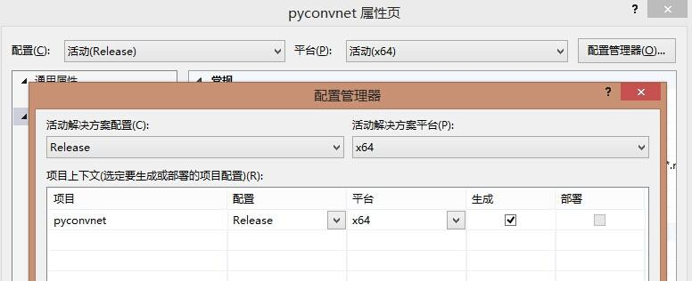3. 修改：属性-配置属性-常规
目标文件名：convnet_ ，这个很重要，可能是因为源文件设置的原因，不改成这个运行会报错，当然如果使用的是原始的Alex版那就不需要修改了。
目标文件扩展名：.pyd
平台工具集：Visual Studio 2013 (v120)
配置类型：动态库(.dll)
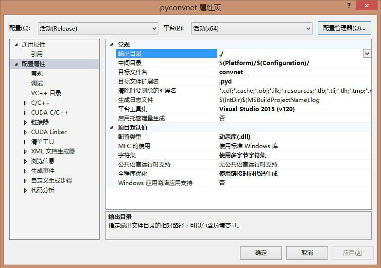4. 在原始项目cuda-convnet的C++文件中，对以下内容进行替换
a. 替换 cutil_inline.h 为 helper_cuda.h in all C++ files (12 changes)
b. 替换 cutilCheckMsg 为 getLastCudaError in all C++ files (39 changes)
c. 增加 #include
d. 增加 #include
e. 增加 #include
f. 增加 #define cutGetMaxGflopsDeviceId() gpuGetMaxGflopsDeviceId() 到 src/convnet.cu
PS：对于改进版的cuda-convnet-master工程，a-d已经被做了修改，但避免遗漏可以检查一下。
5. 配置各种包含，各种引用，如果之前是按照我写的做的，并且软件都是默认安装，那就照做就ok了，内容太多，就直接上图来解释了，细节如下：
工程 - 属性 - 配置属性 - C/C++ - 常规 - 附加包含项
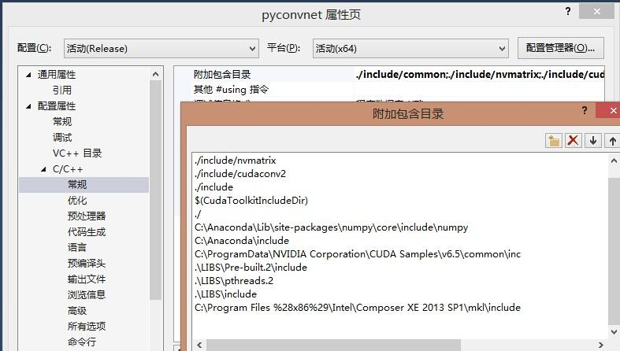工程 - 属性 - 配置属性 - C/C++ - 预处理器 - 预处理器定义：这里很重要的一个步骤是删除默认的“USE_MKL”，否则，程序回去调用这个库，但是它不存在，所以可想而知。
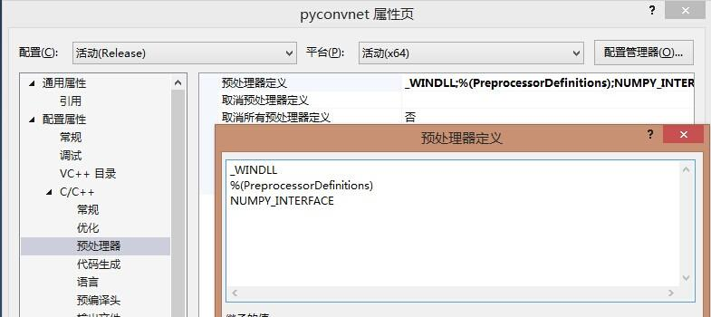工程 - 属性 - 配置属性 - CUDA C/C++ - Common - Additional Include Directories
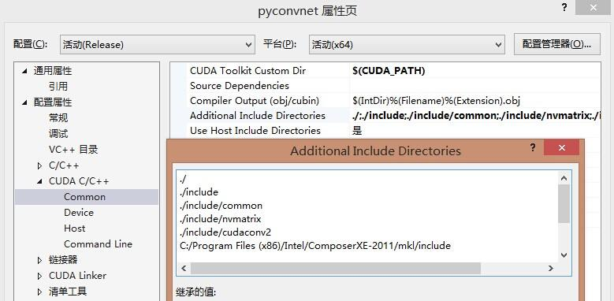工程 - 属性 - 配置属性 - CUDA C/C++ - Host - Additional Compiler Options ： /wd4819
（PS：就是屏蔽一点怪异的警告，不是必须项）
工程 - 属性 - 配置属性 - CUDA C/C++ - Host - Preprocessor Definitions：和之前一样，删除“USE_MKL”
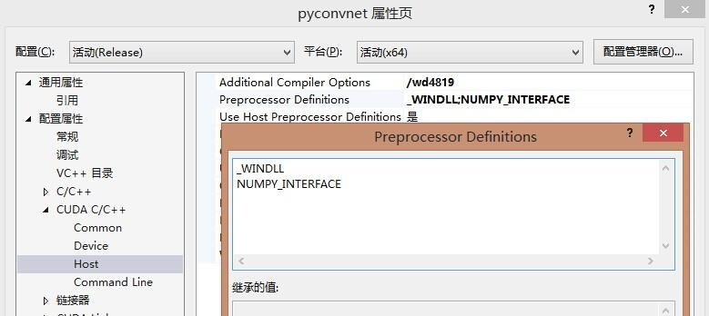工程 - 属性 - 配置属性 - 链接器 - 常规- 附加库目录
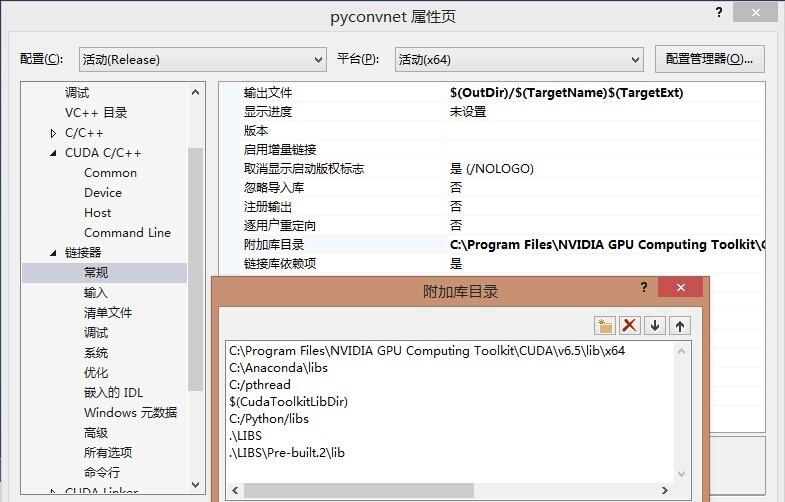工程 - 属性 - 配置属性 - 链接器 - 输入- 附加依赖项
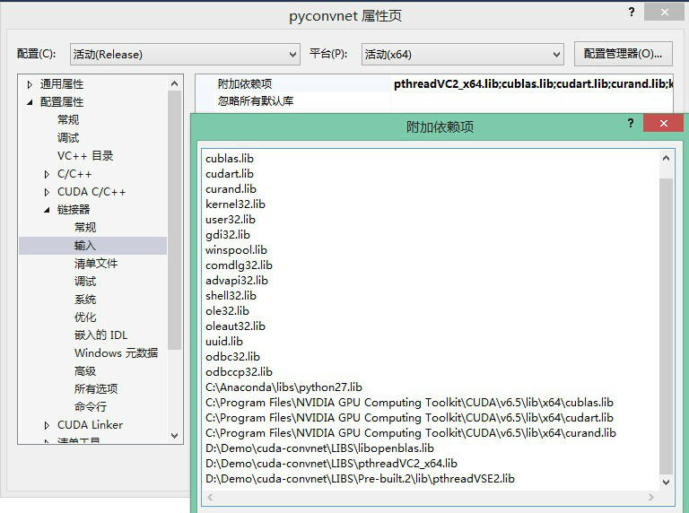6. 一切设置完，就可以重新生成工程，祈祷上帝，佛祖，耶稣，圣母玛利亚保佑，不报错吧!
出现这个字样，就可以恭喜你了！！这中间可能会有无数的Warning，直觉上暂时可以忽略，，，
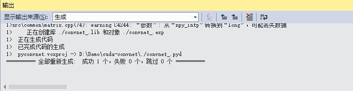至此配置工程完毕，跑一个例程激励自己一下吧。（测试过程遵循cuda-convnet官方主页的说明文档步骤）
1. 在工程文件夹中新建一个data文件夹，并且将测试数据集下载数据集cifar-10-py-colmajor.tar.gz 解压后拷贝到data中（下载地址：cifar-10-py-colmajor.tar.gz ）
2. 在工程文件夹中新建一个storage2\tmp文件夹（主要是和官网提供的Demo匹配），用于训练过程中生成各种神奇的东西。
3. 用 Dependency Walker 打开工程文件夹中的convnet_.pyd文件（就是之前改名的那个，如果是原始的版本文件名为pyconvnet.pyd，并且在之前的那一步不需要修改）。打开之后，应该立马就知道该干什么了，一堆缺少的dll文件，其中libopenblas.dll 和pthreadVC2_x64.dll应该是必然缺少的。应该还记得原始文件在工程文件夹的LIBS文件夹中，直接拷贝到工程文件的根目录就OK了。如果还缺少别的文件就依葫芦画瓢去Google一下丢到更目录下。大概左上角那个目录树完整就行了，因为左下那个Module，我一开始缺少好几个，我丢了点进去fixed了，但是剩下两个实在找不到，就继续下一步，似乎也可以。不知道是干嘛的，懂的小朋友，给指点一下！~
PS：亲自验证了一下，的确Module里面报错的DLL不用理它，之要左上角工程的DLL全部加载正常就OK了！~
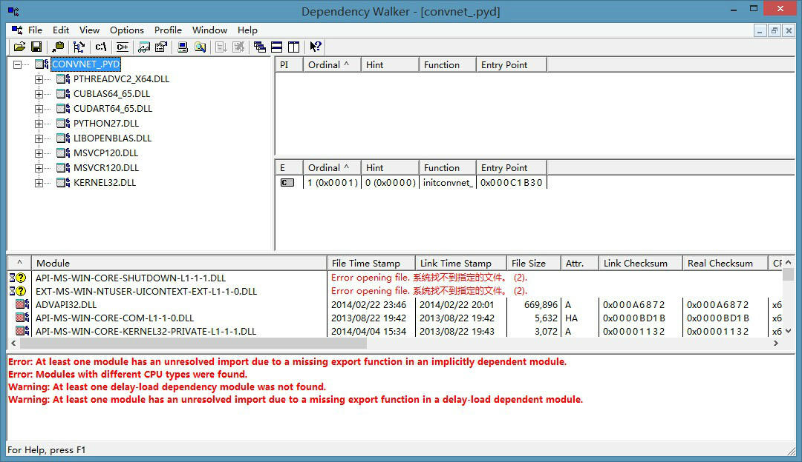4. 最后在cmd中运行命令：
python convnet.py --data-path=.\data\cifar-10-py-colmajor --save-path=.\storage2\tmp --test-range=6 --train-range=1-5 --layer-def=./example-layers/layers-19pct.cfg --layer-params=./example-layers/layer-params-19pct.cfg --data-provider=cifar --test-freq=13
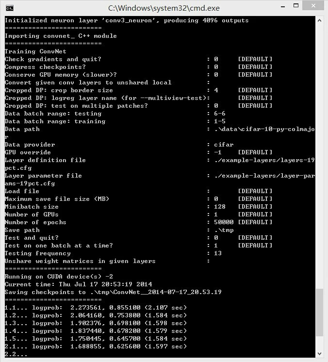这个结果看上去似乎很不错，我跑完了这个训练大概1，2分钟，没注意，不过细节不明觉厉，明天再具体研究这个东西的具体含义！~
今天很高兴，终于跑起来了，不过后面的挑战就更严峻了。